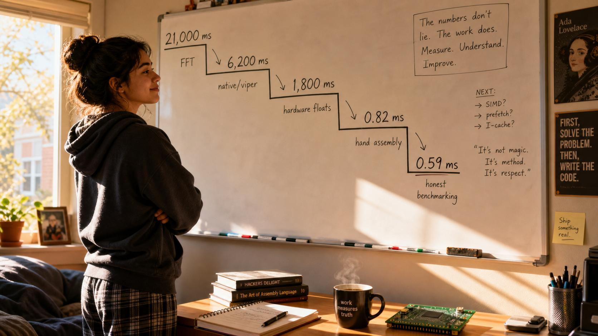
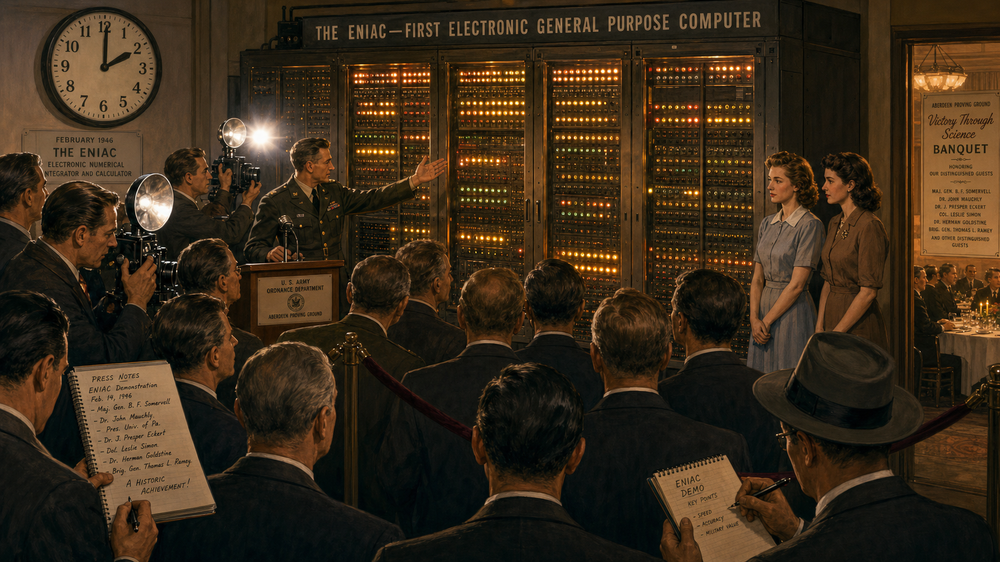

Alec Reeves and the Signal That Waited Fifty Years

Cover Image Prompt
(This is the Cover Image. Do not include this label in the image.) Please generate a wide-landscape 16:9 cover image in a 1930s Art Deco illustrated style, like a period technical poster crossed with a graphic novel cover. A composed English engineer in his mid-thirties, dark hair combed back, wire-rimmed round glasses, wearing a charcoal three-piece suit with a narrow tie, stands at a brass-fitted drafting table in a Paris telecommunications laboratory. Behind him, tall glass vacuum tubes glow faintly amber inside a brass and dark-wood equipment rack, and a round-faced oscilloscope displays a jagged, noisy analog waveform on one side of the table that transforms into a clean row of evenly spaced pulses on a hand-drawn diagram in front of him. Art Deco geometric border ornamentation frames the image in brass and deep green. Color palette: deep browns, brass gold, muted teal, and warm amber tube-glow against a dim slate-blue laboratory background. Emotional tone: quiet, confident foresight, a man seeing decades into the future. Render the title text "ALEC REEVES AND THE SIGNAL THAT WAITED FIFTY YEARS" in a bold period Art Deco sans-serif typeface across the top or bottom third of the image. Generate the image immediately without asking clarifying questions.Narrative Prompt
This story is set in France and England between 1927 and the 1960s, centered on English telecommunications engineer Alec Reeves. The visual language throughout is Early Modern / Art Deco (1900-1950): 1930s Paris industrial-research interiors, brass telephone equipment, glass vacuum tubes glowing amber, round analog oscilloscope faces, drafting tables with hand-inked circuit diagrams, wool three-piece suits, and geometric Art Deco linework. The central theme is a man being technically correct decades before the hardware of his era can prove it: he invents a noise- proof way of sending sound as digital pulses, watches the electronics of his day fail to keep up with the idea, and lives just long enough to see the first signs of the transistor era that will eventually make his invention the foundation of digital audio. Character consistency note: Reeves is depicted consistently across all six panels as a lean, bespectacled man who ages from his mid-thirties (dark hair, round wire glasses, three-piece suit) in Panels 1-3 to his early sixties (grayer, slightly heavier, still wearing round glasses but in a more modern 1960s suit) in Panel 6. The color palette shifts from warm brass/amber/teal in the 1930s Paris panels to cooler blues and grays as the story moves into the wartime and postwar decades, then warms again in the final panel to signal the payoff.Prologue – A Voice Lost in the Wire
In the 1930s, a long-distance telephone call was a fragile thing. Every mile of copper wire bled a little signal into heat and static, so engineers built repeater stations every so often to catch the fading voice and amplify it back to strength. The trouble was that an amplifier cannot tell the difference between a voice and the hiss riding along with it — it boosts both together. Send a call through enough repeaters and the noise piles up faster than the words survive it. In a research laboratory in Paris, a young English engineer named Alec Reeves was about to decide that the whole approach was the wrong idea entirely.
Panel 1: The Noise That Would Not Stop Climbing

Image Prompt
(This is Panel 01. Do not include the panel number in the image.) I am about to ask you to generate a series of images for a graphic novel. Please make the images have a consistent style and consistent characters. Do not ask any clarifying questions. Just generate the image immediately when asked. Please generate a 16:9 image in 1930s Art Deco illustrated style depicting panel 1 of 6. The scene is a telecommunications research laboratory in Paris, France, in 1936. A lean English engineer in his mid-thirties, dark hair combed back, round wire-rimmed glasses, charcoal three-piece suit with sleeves rolled, leans over a large brass-cased test telephone set wired to a wall of humming vacuum-tube repeater equipment. Beside him, two French laboratory technicians in white lab coats watch a round-faced oscilloscope screen showing a badly distorted, jagged waveform with visible noise spikes. A hand-cranked long-distance switchboard with cloth-covered cords sits in the background. Brass gauges, glass vacuum tubes glowing amber, and a large wall map of European telephone routes with red string lines add period detail. Color palette: warm brass, deep mahogany wood, amber tube-glow, muted teal accents. The emotional tone is frustrated concentration — a technical problem that keeps getting worse the harder they try to fix it with brute amplification. Generate the image immediately without asking clarifying questions.Reeves listens through a pair of heavy Bakelite headphones as a test call crackles in from London, each repeater along the line adding its own grain of hiss to the signal. His technicians have tried every trick the company's engineers know: better tubes, tighter filters, more careful spacing between amplifiers. None of it changes the fundamental problem. An amplifier that strengthens a voice will just as faithfully strengthen the noise riding beside it, and over enough repeaters the accumulated static eventually drowns the words it was built to carry.
Panel 2: A Different Question

Image Prompt
(This is Panel 02. Do not include the panel number in the image.) Please generate a 16:9 image in 1930s Art Deco illustrated style depicting panel 2 of 6. Keep the same English engineer from panel 1 — mid-thirties, dark hair, round wire glasses, charcoal three-piece suit, now with his jacket off and shirtsleeves rolled — seated alone at a wide wooden drafting table late at night in the same Paris laboratory, a single brass desk lamp casting a warm pool of light. He is sketching by hand on drafting paper: on the left side of the page a smooth, continuous wavy line labeled with small tick marks; on the right side, the same wave redrawn as a neat staircase of discrete evenly spaced vertical bars of varying height. Scattered around him are crumpled paper balls, a slide rule, a cup of cooling coffee, and an ashtray with one cigarette burning down. Tall dark laboratory windows behind him show the silhouette of Parisian rooftops at night. Color palette: warm amber lamplight against deep blue-black night shadows, brass and dark wood tones. Emotional tone: quiet, electric realization — the moment an idea clicks into place. Generate the image immediately without asking clarifying questions.Alone after the technicians have gone home, Reeves keeps returning to the same sketch. If a repeater could regenerate a clean new pulse instead of amplifying whatever arrived at its door, accumulated noise would stop being the enemy. Instead of pushing a continuous, infinitely delicate wave down the line, he could sample the sound at regular instants, round each sample to the nearest of a fixed set of quantized levels, and send that as a sequence of on-off pulses. A repeater would not need to preserve a fragile shape at all — it would only need to recognize a pulse was there and stamp out a fresh one, indifferent to whatever static had piled onto the original.
Panel 3: Filing the Idea
Image Prompt
(This is Panel 03. Do not include the panel number in the image.) Please generate a 16:9 image in 1930s Art Deco illustrated style depicting panel 3 of 6. Same English engineer, mid-thirties, dark hair, round wire glasses, now back in his full charcoal three-piece suit, standing at a polished wooden counter inside a formal French patent office in Paris in 1938, sliding a leather document folder of technical drawings across to a mustached clerk in a dark waistcoat who is stamping paperwork with a brass seal. Through a doorway behind them, a glimpse of the laboratory shows a prototype apparatus: a row of glass vacuum tubes, a sampling switch made of rotating brass contacts, and a paper tape punched with a repeating pattern of dots representing quantized pulses. Art Deco ceiling light fixtures and marble floor tiles complete the setting. Color palette: brass gold, dark wood, cream document paper, muted red official stamps. The emotional tone is formal satisfaction, a private triumph made official. Generate the image immediately without asking clarifying questions.By 1938, Reeves has turned the sketch into a working method and a formal filing: sample the signal at a steady rate, quantize each sample against a fixed ladder of amplitude levels, and encode the result as a pulse sequence a receiver can decode back into sound. He calls it pulse-code modulation. The French patent office stamps his application that October; a corresponding United States patent follows the next year. On paper, he has just solved the noise problem that has plagued long-distance telephony for a generation.
Panel 4: The Machine the Idea Needs Does Not Exist
Image Prompt
(This is Panel 04. Do not include the panel number in the image.) Please generate a 16:9 image in 1930s Art Deco illustrated style depicting panel 4 of 6. Same English engineer, mid-thirties, dark hair, round wire glasses, now in shirtsleeves and waistcoat, standing with arms crossed in a cavernous Paris laboratory workshop in 1939, surveying an enormous room- filling rack of hundreds of glowing glass vacuum tubes, tangled cable looms, and hand-wired relay panels that only manages to encode a single telephone channel. Two engineers in lab coats struggle to replace an overheated tube with heavy asbestos gloves; a wisp of smoke rises from one unit. A crumpled cost estimate ledger lies open on a nearby table showing a very large sum circled in red pencil. Dim, cooler lighting than prior panels, dust motes visible in a shaft of window light. Color palette: cooling grays and dull brass, a single small patch of amber tube- glow, muted red ledger ink. Emotional tone: sober disappointment, the weight of an idea too large for its era's technology. Generate the image immediately without asking clarifying questions.The gap between the idea and the machine is enormous. Sampling, quantizing, and encoding a single voice channel in real time demands hundreds of vacuum tubes, acres of relay wiring, and a budget no telephone company of 1939 will approve for one experimental circuit. Tubes run hot, fail often, and take up a room where a single simple amplifier once sufficed. Reeves has proven pulse-code modulation works on a laboratory bench; he cannot come close to proving it is affordable. The patents sit filed and correct, waiting for electronics that do not yet exist.
Panel 5: Years Pass, Quietly
Image Prompt
(This is Panel 05. Do not include the panel number in the image.) Please generate a 16:9 image in a 1940s-1950s transitional illustrated style depicting panel 5 of 6, blending Art Deco linework with a cooler, more austere postwar palette. Show a triptych-style single composition split across the frame by faint vertical seams: on the left, the same engineer, now in his mid-forties with a hint of gray at the temples, in a wartime RAF-adjacent research office with blackout curtains and a radar navigation display; in the center, a dusty shelved laboratory cabinet holding the same brass pulse-sampling apparatus from panel 4, cobwebbed and unused, a calendar on the wall showing years flipping past; on the right, a small glass-and-metal transistor, brand new and gleaming, held up in a technician's tweezers under a bright inspection lamp, dwarfing the room-sized vacuum tube rack faintly visible behind it for scale. Color palette: cool wartime blues and grays fading into a brighter, cleaner 1950s laboratory white and silver on the right side. Emotional tone: patient dormancy giving way to quiet renewal. Generate the image immediately without asking clarifying questions.The idea does not die; it simply waits. War pulls Reeves back to England, where he turns his energy to radio navigation for RAF bombers, and the pulse-code notion he patented in Paris goes largely untouched for years, though wartime researchers experimenting with secure voice transmission take some early interest in pulse techniques. Not until the transistor arrives in the postwar years does the arithmetic finally begin to change: a device the size of a pea can do the job that once needed a tube the size of a fist, and suddenly a circuit with hundreds of switching elements starts to look like something a company could actually build.
Panel 6: The Idea Finally Fits Its Century
Image Prompt
(This is Panel 06. Do not include the panel number in the image.) Please generate a 16:9 image in a clean early-1960s illustrated style with Art Deco linework details preserved in the architecture. Depict panel 6 of 6. The same engineer, now in his early sixties, gray hair, round wire glasses, wearing a more modern dark 1960s suit, stands in a bright modern telecommunications laboratory holding a small circuit board dense with transistors, a satisfied half-smile on his face, dwarfed by a wall-sized bank of neatly stacked digital pulse-code equipment far smaller than the vacuum-tube rack from panel 4. Beside him, on a lit display pedestal, a compact reel-to-reel digital recording device hums quietly. Through a window, a modern city skyline suggests the wider world about to adopt digital telephone networks. Color palette: bright clean whites, silver, and a return of warm brass and amber accent lighting to echo panel 1. Emotional tone: vindication and quiet pride, decades of patience finally paid off. Generate the image immediately without asking clarifying questions.By the mid-1960s, the transistor and the integrated circuits following it finally give pulse-code modulation a hardware budget it can live within, and telephone companies begin converting their trunk lines to digital pulses just as Reeves once sketched them. He lives to see the recognition that comes with vindication, honored for a method the industry spent almost thirty years catching up to. The idea he filed as a young man in Paris outlives the vacuum tube entirely, going on to become the sampling- and-quantizing backbone of the compact disc, the digital telephone network, and every microphone that turns sound into numbers.
Epilogue – What Made Reeves Different?
Reeves's story is not one of instant triumph; it is one of correct patience. He identified the actual flaw in analog telephony — that noise accumulates because amplifiers cannot distinguish signal from static — and designed a solution so structurally sound that no advance in electronics ever had to correct his original 1938 patents, only catch up to them. He kept the idea alive through a world war, a change of country, and decades of commercial indifference, trusting that the underlying logic of sampling and quantizing was right even when the vacuum tube could not yet afford to prove it. That is the harder kind of engineering courage: not the flash of invention, but the discipline to be correct years before anyone can act on it.
| Challenge | How Reeves Responded | Lesson for Today |
|---|---|---|
| Noise accumulates faster than repeaters can fight it | Reframed the problem: stop transmitting a fragile continuous wave, transmit discrete regenerable pulses instead | Sometimes the fix is not a better version of the current approach, but a different representation of the signal entirely |
| 1930s vacuum-tube electronics were too slow, bulky, and costly to build PCM at scale | Patented the method anyway and let the idea wait for hardware that did not yet exist | A correct design does not need to be immediately buildable to be worth recording precisely |
| Decades of commercial indifference while transistors slowly matured | Continued working in adjacent fields (radar, radio navigation, optical fiber research) without abandoning the original insight | Great ideas often need an unrelated hardware revolution before they become practical — patience is part of the engineering |
| Almost no one outside specialist circles remembers his name today | His invention became invisible infrastructure — CDs, digital phone networks, every sampled microphone | The most successful engineering disappears into the background of everyday life instead of staying famous |
Call to Action
Every time you sample a waveform in this course's labs, you are running Reeves's 1938 idea on hardware he could only have dreamed of: a microcontroller that samples, quantizes, and encodes sound thousands of times a second, on a board smaller than the vacuum tubes that once defeated him. When you write the sampling code in Chapter 6 and capture your first waveform with an I2S microphone in Lab 7, you are not just learning a technique — you are finally giving Alec Reeves's patent the hardware it waited fifty years to receive.
"[PCM] could be the most powerful tool so far against the effects of interference on speech — especially on long routes with many regenerative repeaters, since these devices could easily be designed and spaced so as to make the noise nearly noncumulative." —Alec Reeves
References
- Wikipedia: Alec Reeves - Biography covering his education, career at International Telephone and Telegraph's Paris laboratories, wartime radar work, and postwar research managing the team that developed optical fiber.
- Wikipedia: Pulse-code modulation - Technical explanation of the sampling, quantizing, and encoding method Reeves patented in 1938, and its role as the foundation of modern digital audio.
- Wikipedia: Sampling (signal processing) - The related concept of converting a continuous-time signal into discrete samples, the same operation this course's students perform when digitizing microphone input.
- IEEE-USA InSight: Pulse Code Modulation — It All Started 75 Years Ago with Alec Reeves - IEEE-USA engineering-heritage article on Reeves's invention, its vacuum-tube-era limitations, and its eventual adoption once transistors matured.
- Encyclopaedia Britannica: pulse-coded modulation - Overview of pulse-code modulation as an electronics technique and its central role in digital audio formats such as the compact disc.